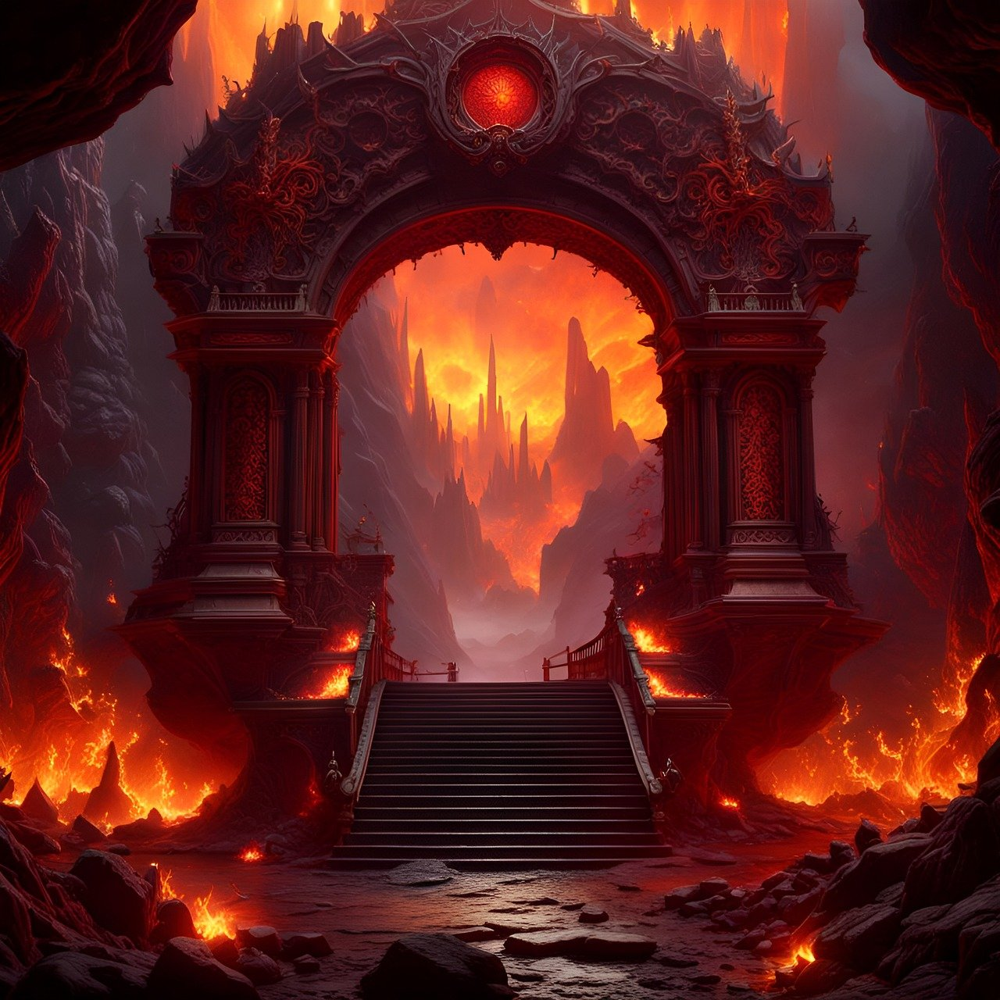
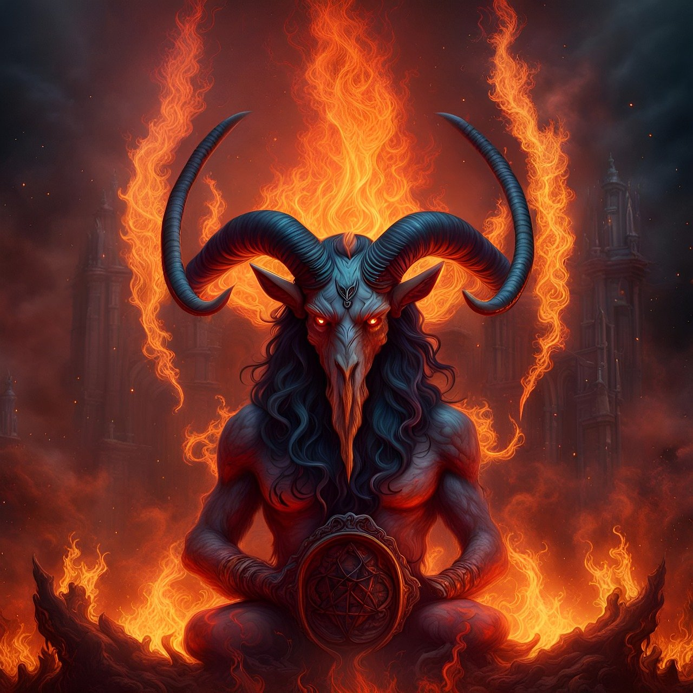
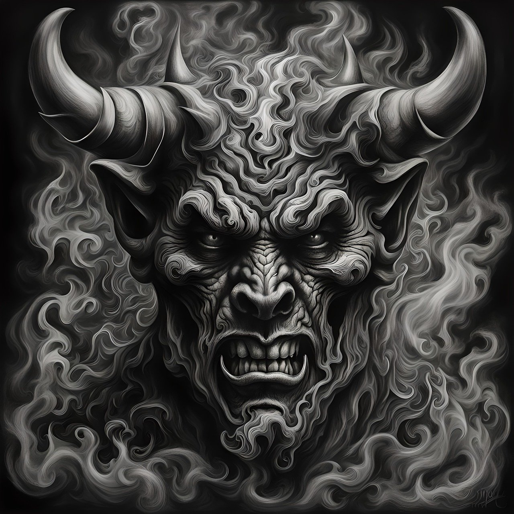

hell is a location or state in the afterlife in which souls are subjected to punitive suffering, most often through torture, as punishment after death. Religions with a linear divine history often depict hells as eternal destinations, the biggest examples of which are Christianity and Islam, whereas religions with reincarnation usually depict a hell as an intermediary period between incarnations, as is the case in the Indian religions. Religions typically locate hell in another dimension or under Earth's surface. Other afterlife destinations include heaven, paradise, purgatory, limbo, and the underworld.
A devil is the personification of evil as it is conceived in various cultures and religious traditions.[1] It is seen as the objectification of a hostile and destructive force.[2] Jeffrey Burton Russell states that the different conceptions of the devil can be summed up as 1) a principle of evil independent from God, 2) an aspect of God, 3) a created being turning evil (a fallen angel), and 4) a symbol of human evil.
Each tradition, culture, and religion with a devil in its mythos offers a different lens on manifestations of evil.[4] The history of these perspectives intertwines with theology, mythology, psychiatry, art, and literature, developing independently within each of the traditions.[5] It occurs historically in many contexts and cultures, and is given many different names—Satan, Lucifer, Beelzebub, Mephistopheles, Iblis—and attributes: it is portrayed as blue, black, or red; it is portrayed as having horns on its head, and without horns, and so on.[6][7] While depictions of the devil are usually taken seriously, there are times when it is treated less seriously; when, for example, devil figures are used in advertising and on candy wrappers.
